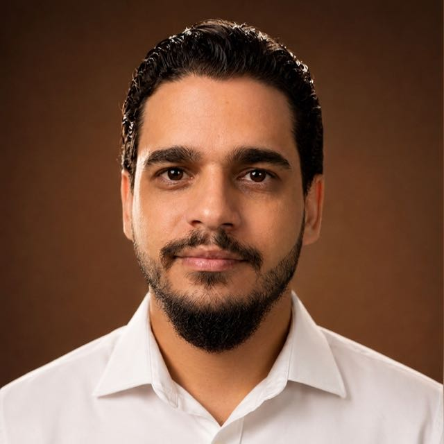

Profissionalização da gestão
Rotinas de gestão que não dependem da sua memória: metas, indicadores e reuniões curtas acompanhadas toda semana.
Com treinamento de líderesSou Mauricio Pinho. Analiso os números do seu negócio (DRE, caixa, processos, equipe e vendas) e trabalho o lado emocional que trava suas decisões, para a empresa parar de depender do seu desgaste.Sou Mauricio Pinho. Cuido dos números do seu negócio e do lado emocional que trava suas decisões, para a empresa parar de depender do seu desgaste.
Em mais de dez anos dentro de empresas, vi o mesmo padrão: o caixa, as vendas e a equipe mostram o sintoma, mas a causa costuma estar no cansaço e nas defesas de quem decide.
Fadiga de decisão. Depois de centenas de escolhas no dia, o cérebro busca alívio rápido e foge do que exige esforço, como olhar os números.
Falta de processos claros e medo de errar. Sem rotina definida, controlar tudo vira a única forma de se sentir seguro.
Ninguém do seu lado acompanhando. Sem metas e indicadores combinados (custo por contato, conversão, venda), não dá para saber se o problema está no anúncio, no atendimento ou no preço.
Crenças antigas sobre dinheiro e valor. Um dia elas protegeram você; hoje só atrapalham.
Mudar só um lado. A rotina, a cabeça e a gestão precisam mudar juntas, ou o padrão volta.
Por isso eu não separo a gestão do emocional. Os números mostram onde a empresa perde; o trabalho emocional mostra por que isso continua acontecendo. É isso que eu chamo de Gestão Mente & Empresa.
Falar com o Mauricio sobre o meu casoPassei mais de uma década como gestor nacional no varejo, formando líderes e reduzindo perdas. Lá aprendi que nenhum processo se sustenta quando a cabeça de quem lidera está no limite. Hoje junto as duas coisas.

Leio a DRE, o fluxo de caixa e os processos para achar onde o dinheiro escapa.
Com neuropsicanálise, PNL e hipnoterapia, trabalho a ansiedade do dia a dia, a procrastinação e os padrões que levam a decidir mal.
Formei mais de 100 líderes, muitos promovidos mais de quatro vezes. Hoje também formo terapeutas na Mentoria 4ª Onda e coordeno uma rede de terapeutas parceiros.
Acompanho o seu processo de vendas e a sua agência de marketing: tráfego pago, social selling e os números que mostram se o investimento vira cliente.
Observação importante: não sou psicólogo nem médico. Atuo com neuropsicanálise, PNL e hipnoterapia, e com consultoria de gestão. Quando um caso precisa de acompanhamento psicológico ou médico, eu oriento a procurar.
Você não precisa decidir nada antes de conversar. O primeiro passo é entender o seu caso.
Decisão. Ninguém muda sem antes decidir mudar. Por isso o processo começa com uma conversa, sem compromisso, para você decidir com clareza.
Comunicação. Na empresa e na família, boa parte dos problemas melhora quando as pessoas passam a se entender. Trabalho isso com você, com a equipe e, quando faz sentido, com quem convive com você.
Responda apenas 7 perguntas rápidas para desbloquear o seu presente de boas-vindas e ser direcionado ao WhatsApp, onde agendaremos a sua sessão estratégica experimental.
Em um encontro de 50 minutos (online ou presencial, individual ou acompanhado do seu cônjuge ou seu sócio) você terá um espaço seguro para expor seus desafios pessoais e profissionais e traçar novos caminhos.
Se houver identificação e você sentir que é o momento, definiremos um plano sob medida desenhado exclusivamente para suas necessidades e objetivos atuais.
Se o seu caso pedir, combinamos mais de um encontro por semana. Isso é definido na sessão estratégica.
Toque nos meses, nas bolinhas ou arraste o quadro para o lado.
Na maioria dos negócios que acompanho, o dono gera boa parte do faturamento, muitas vezes perto de 70%. Funciona enquanto ele aguenta. Basta uma doença, um problema na família ou um período de cansaço para o caixa cair junto. A estruturação existe para a empresa continuar de pé mesmo quando você precisa se afastar.
Rotinas de gestão que não dependem da sua memória: metas, indicadores e reuniões curtas acompanhadas toda semana.
Com treinamento de líderesSeparar o dinheiro da empresa do seu dinheiro pessoal e enxergar o resultado real, mês a mês, sem depender do quanto você atende.
Com DRE e fluxo de caixaRecepção, atendimento e profissionais treinados para resolver o dia a dia com autonomia, sem passar tudo por você.
Com treinamento de equipeEu desenho os processos da empresa: cada tarefa escrita passo a passo, com quem faz e como conferir. Assim o trabalho sai igual mesmo quando você não está.
Com POP (Procedimento Operacional Padrão)É um manual curto, em linguagem simples, que mostra como fazer uma tarefa do começo ao fim. Por exemplo: como agendar e confirmar um cliente, como abrir e fechar o caixa, como responder um orçamento. Com os POPs, um funcionário novo aprende mais rápido, os erros diminuem e você deixa de ser a única pessoa que sabe como as coisas funcionam.
Todos começam pela sessão estratégica gratuita. Escolha o seu perfil para ver o que eu faço nele.
Acompanhamento de 3 meses para recuperar clareza, rotina e capacidade de decidir.
Organização que funciona no dia a dia, sem burocracia.
Eu acompanho o seu comercial e a sua agência de perto, para o investimento em marketing virar cliente.
Para terapeutas, mentores e prestadores de serviço que querem sair das horas avulsas e montar um negócio previsível.
Coordeno uma rede de terapeutas com supervisão de casos. Se você quer fazer parte ou precisa de apoio na condução de casos, vamos conversar.
Falar sobre a redeIndico psicólogos, online ou presencial conforme a sua cidade e a especialidade que o caso pede, e neuropsicólogos para avaliação. Nós não emitimos laudos; quando o caso precisa, encaminho para quem faz. Os terapeutas parceiros também atendem em planos mensais, com valor acessível.
Números de empresas que acompanhei e o que dizem as pessoas que passaram pelo processo.
Perdas anuais de uma operação reduzidas em 5 anos, com procedimentos padrão, controle de fraudes, DRE e treinamento das equipes.
Faturamento mensal em 5 meses, com caixa separado entre pessoa física e empresa, inventário refeito, compras controladas e nova cultura de equipe.
“Eu quase que morria. Eu estava em um momento muito difícil na vida, se eu contar ninguém acredita. Quando ninguém mais olhava por mim, a equipe da ressignificar me acolheu, me deu a orientação que eu precisava e agora eu estou digitando isso e chorando, pois eu lembro oque eu passei e onde estou agora. Deus foi muito bom comigo por ter indicado essas pessoas!”
“Essa clinica é maravilhosa, foi um divisor de aguas na minha vida de vdd! A clínica me acolheu de uma forma única, transmitindo paz e confiança desde o primeiro contato. O ambiente é leve e transmite segurança, e o terapeuta demonstra uma sensibilidade rara, capaz de ouvir e compreender profundamente. Cada sessão é um momento de cuidado genuíno, que transforma e fortalece. É um espaço onde me sinto verdadeiramente valorizada e apoiada”
“Trabalho de altíssima qualidade, trazendo uma abordagem humana diferenciada, com foco na resolução de situações críticas, seja de caráter financeiro, profissional, emocional, sentimental ou outros. Super recomendo.”
“O atendimento é acolhedor e o tratamento é conduzido de forma clara, objetiva e muito profissional. O programa terapêutico é de extrema qualidade, trazendo segurança e confiança durante todo o processo. Recomendo para quem busca um cuidado sério e humanizado.”
“Clínica com profissionais excelentes, atendimento acolhedor e muito humano, transmite confiança desde o primeiro contato. Recomendo muito pelo cuidado e atenção com cada pessoa.”
“Experiência incrível!! Consegui me curar de alguns traumas que eu tinha, e hoje me encontro muito bem graças a equipe da ressignificar! Sou muito grata por tudo!! Indico demais, profissionais de excelente qualidade.”
“A clínica Ressignificar é ótima tem ajudado muitas pessoas a romper com ciclos danosos e ressignificar a própria história para ter uma vida melhor.”
“Não existe palavras que alcance o que é ser acolhido,com respeito, carinho e paciência.Ou seja amor pelo próximo”
“Experiência de muito acolhimento,e segurança,onde consegui saber as travas e bloqueios que tanto me indicam ao alcançar meus objetivos.”
“Clínica maravilhosa , que nos ajuda a seguir com mais aceitação e compreensão!!”
“Super recomendo.Atendimento personalizado.”
“Profissionais muito competentes”
“Profissional incrível, clinica excelente!”
“Tive uma experiência incrível e indico demais.”
“Profissional competente e muito acolhedor!”
“Foi muito boa,super recomendo.”
“fui atendida on-line e super recomendo”
Textos copiados das avaliações públicas no Google, sem edição.
Pode ser um, outro ou os dois. Na sessão estratégica vemos se o seu caso pede mais gestão, mais trabalho emocional ou a combinação, que é o que a maioria dos empresários precisa.
Não. Sou neuropsicanalista, com formação em PNL e hipnoterapia, e consultor de gestão. Meu trabalho é de desenvolvimento emocional e não substitui acompanhamento psicológico ou psiquiátrico. Tenho uma rede de psicólogos e neuropsicólogos parceiros e, se o seu caso pedir, eu indico.
Pode, e é recomendado, porque decisões da empresa e da família costumam envolver os dois. Se a agenda não permitir, fazemos a primeira sessão só com você e depois uma segunda sessão gratuita com o sócio ou o cônjuge.
Sim. É comum um marido procurar ajuda para a esposa, ou os pais para um filho. Converso primeiro com quem me procurou e depois com a pessoa, porque o processo só funciona quando ela também decide querer.
Sim. Posso supervisionar a agência que você já tem: combinamos metas e indicadores, acompanho relatórios e campanhas e confiro se o atendimento está transformando os contatos em vendas. Se precisar, tenho equipe própria para tráfego, site e redes.
POP é o Procedimento Operacional Padrão: um manual curto, em linguagem simples, que mostra como fazer uma tarefa do começo ao fim, quem faz e como conferir. É o nome usado no Brasil por empresas, clínicas e pela vigilância sanitária. Com os POPs, a equipe resolve o dia a dia sem depender de você.
Depende do caminho: acompanhamento de 3 meses, plano mensal ou consultoria para a empresa. O investimento é apresentado depois da sessão estratégica, quando eu já entendi o seu caso. A sessão é gratuita.
O acompanhamento pessoal tem 3 meses, com 12 encontros de 1 hora, um por semana. Quando o caso pede, combinamos mais de um encontro na semana. A Mentoria 4ª Onda tem 6 meses. Consultorias de empresa variam conforme o diagnóstico.
Sim. Atendo online clientes no Brasil e no exterior, e presencialmente no meu consultório em Pernambuco. Também faço atendimento no local, quando o caso pede.
Sim. Tudo o que você compartilha nas sessões e no WhatsApp é tratado com sigilo.
A sessão estratégica é para quem quer mudar a situação agora. Se você ainda está pensando, acompanhe meus conteúdos no Instagram e me chame quando estiver pronto.
Responda algumas perguntas rápidas (menos de 1 minuto). As respostas chegam prontas no meu WhatsApp e, se fizer sentido, marcamos a sua sessão estratégica gratuita. As vagas dependem da agenda da semana.
Prefere conversar direto? Chamar no WhatsApp